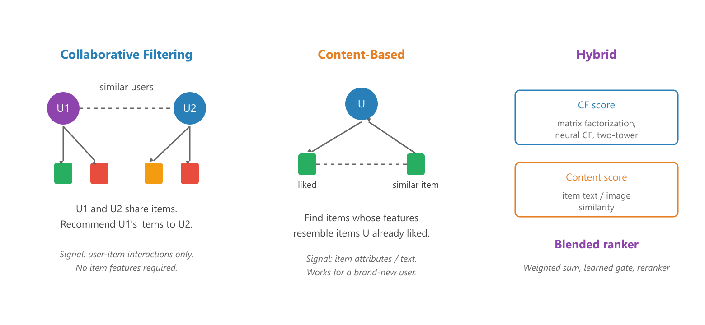
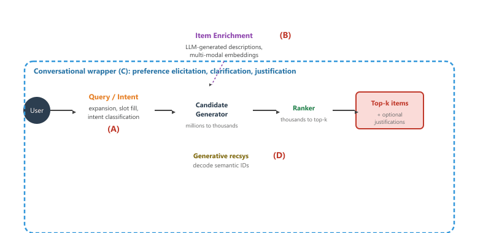

"The best recommendation feels less like an algorithm and more like a friend who remembers what the reader said last week."
Pixel, Curious Librarian Agent
Personalization sits inside almost every conversational surface a reader will ship. A support agent that suggests the next help article, a voice assistant that picks the next song, a search assistant that ranks the products on the first screen: all of them are recommender systems wearing a chat skin. This section sets up the rest of the chapter by recapping the three classical recsys families, naming the three pain points LLMs are best at attacking, and laying down the taxonomy of LLM entry points that Sections 38.2 through 38.5 each unpack.
Pop quiz: what do a thermostat suggesting a temperature, a streaming app queueing the next episode, and a librarian whispering "you might also like" have in common? They are all the same algorithm wearing different hats. For decades, recommender systems hid behind grids of thumbnails, pretending to be furniture. Then chat surfaces arrived, and the recsys had to learn small talk. The awkward part is that the recsys was doing the heavy lifting all along; the chatbot just gets the credit because it bothered to say hello. This chapter is, in some sense, a long apology to the ranker.
Prerequisites
This section assumes the reader has finished the conversational-AI foundations earlier in Part VIII and is comfortable with LLM prompting and embedding patterns from earlier parts. No prior recsys background is required; the three classical families (collaborative filtering, content-based, hybrid) are recapped from scratch.
38.1.1 Why Recsys Belongs in the Conversational AI Part
For most of its history, recommender research sat in its own subfield, next to information retrieval and data mining, with its own venues (RecSys, SIGIR) and its own benchmarks (MovieLens, Amazon Reviews, Yelp). The conversational AI subfield grew up across the hall, working on dialogue policies, slot filling, and persona. The two communities cross-pollinated, but their products usually shipped separately: a recommender lived behind a card grid, and a chatbot lived inside a text box.
The modern conversational surfaces collapse that wall. A chat with a shopping assistant ends with a product card. A voice assistant that hears "play something for cooking dinner" needs to rank a candidate set of tracks. A document assistant that runs over a corporate wiki has to decide which two of fifty matched articles to read aloud. Every one of those interactions is a recommender system wrapped in a turn of dialogue. The persona, memory, and dialogue-state work of Chapter 37 handles the conversation. The ranking, retrieval, and personalization work of this chapter handles the substance.
There is also a research-side reason for the placement. Recommender systems are the canonical case where the user signal is implicit (clicks, dwell time, replays) rather than explicit (a star rating). Conversational AI is the canonical case where the user signal can become explicit again, because the dialogue surface lets the user say "I want fewer of those." LLMs sit at the intersection: they make the implicit-to-explicit translation cheap. A model that can read a chat transcript and emit a structured preference vector turns a noisy conversational signal into something a classical ranker can use.
38.1.2 The Three Classical Recsys Families
Before LLMs enter the picture, almost every production recsys descends from one of three families. The names are decades old, the techniques are battle-tested, and the failure modes are the ones the next subsection will name. Figure 38.1.1 illustrates the contrast between the first two.

38.1.2.1 Collaborative Filtering
Collaborative filtering (CF) is the oldest of the three. The signal is the user-item interaction matrix: rows are users, columns are items, entries are ratings or implicit feedback such as clicks. The core idea is "users who agreed in the past tend to agree in the future." Modern CF rarely keeps the matrix explicit. Instead, both users and items are embedded into a shared latent space through matrix factorization, two-tower neural networks, or graph neural networks, and the score for a user-item pair is the inner product of their embeddings. CF needs neither item descriptions nor user demographics, only interaction history, which is also its main weakness.
38.1.2.2 Content-Based Filtering
Content-based filtering uses item features (text, image, structured attributes) to find items similar to ones a user has liked. Compute an embedding for each item from its features, embed the user as the centroid of items the user previously consumed, and retrieve nearest neighbors. The big strength: a brand-new user (or a brand-new item) does not need any interaction history to be served, because the embedding lives in feature space. The big weakness: the recommendations are narrow. A user who watched three thrillers gets a fourth thriller, never the foreign-language drama they would have loved.
38.1.2.3 Hybrid Systems
Almost every production system is hybrid. The blend can be as simple as a weighted sum of CF and content scores, or as elaborate as a learned gating network that decides per query whether to lean CF (lots of history) or content (cold-start). Two-stage retrieval is itself a hybrid pattern: a cheap CF candidate generator produces thousands of candidates, then a slower content-aware reranker reorders the top hundred. The same retrieve-and-rerank pattern from Section 32.1 applies here verbatim, with the LLM playing the reranker role.
38.1.3 Three Pain Points LLMs Attack
Every classical recsys textbook lists the same three failure modes. They are the reason LLMs got pulled into the field in the first place.
Cold-start: a brand-new user or item has no interaction history, so CF has nothing to factor. Sparsity: most users have touched a tiny fraction of the catalog, so most user-item pairs are unobserved. Novelty trap (over-personalization): systems that maximize click-through tend to recommend the same popular items to everyone, killing serendipity. LLMs help with all three because they can reason about items from text alone, even when no one has interacted with them.
38.1.3.1 Cold-Start
A new user who has not rated anything is invisible to CF. A new item that has not been clicked is invisible to CF. Classical fixes include onboarding questionnaires for users, hand-curated tags for items, or fallback to popularity-based recommendations. LLMs offer a richer fix. For new users, a conversational onboarding (Section 38.4) gathers preferences in 30 seconds of dialogue. For new items, the LLM-enriched description (Section 38.3) places the item into the embedding space before any human ever clicks it, so content-based retrieval can serve it on day one.
38.1.3.2 Sparsity
The Netflix catalog has hundreds of thousands of titles; the typical viewer has watched a few hundred. The interaction matrix is over 99.9 percent empty. CF must extrapolate from extremely sparse signal. LLMs help by adding side information that is independent of click history: an item description, a category hierarchy, an LLM-generated topic label, or an LLM-generated user profile summary. The side information turns sparse CF embeddings into denser hybrid embeddings.
38.1.3.3 The Novelty Trap
A system that optimizes for the next click converges on the items most users click on next, which are almost always the popular ones. This is the over-personalization or filter-bubble failure mode. LLMs help in two ways. First, an LLM reranker can be prompted to explicitly diversify a candidate set (the Maximal Marginal Relevance style trick from RAG applies here directly). Second, an LLM justification ("you might enjoy this thriller because of its slow pacing and unreliable narrator, similar to Gone Girl which you rated highly") gives the user a reason to try a non-obvious recommendation, raising the click rate on the long tail.
38.1.4 Where LLMs Plug In: A Taxonomy
The chapter organizes around four entry points where an LLM can sit inside or alongside a classical recsys pipeline. Figure 38.1.2 places each entry point on the modern two-stage retrieval architecture.

The four entry points are summarized below:
- (A) Query and intent understanding. The LLM sits at the front of the pipeline and rewrites the user's natural-language ask into a structured retrieval query: expand "good detective novels" into the right set of subgenre tags, classify the intent as informational versus transactional, and fill the slots that the downstream ranker expects. Covered in Section 38.2.
- (B) Item-side enrichment. The LLM sits at the catalog. Sparse item records (a title, a category, three attributes) are expanded into rich textual descriptions before encoding, so the resulting embeddings carry semantic depth that the raw record cannot. Covered in Section 38.3.
- (C) Conversational and agent-style recsys. The whole flow is wrapped in a dialogue. Preferences are elicited turn by turn, recommendations come with justifications, and the assistant can ask clarifying questions when uncertainty is high. Covered in Section 38.4.
- (D) Generative recsys. The candidate generator itself is replaced. Instead of retrieving from a fixed embedding index, a sequence-to-sequence model generates the next item directly as a sequence of semantic ID tokens. The vocabulary is a learned codebook. Covered in Section 38.5.
Entry points (A), (B), and (C) augment an existing classical pipeline. Entry point (D) replaces a major chunk of it. Production systems usually mix them: an LLM-rewritten query (A) hits an enriched item index (B) through a classical CF candidate generator, then the top fifty are reranked by an LLM that also writes justifications for a chat surface (C). Generative recsys (D) is the newest line of research; as of 2026, the published wins are real but mostly in offline benchmarks, and full production deployments are early.
Entry points (A), (B), and (C) all operate inside the retrieve paradigm: the catalog is a fixed, closed set of items, and the job is to pick the best subset for the user. Entry point (D) flips into the generate paradigm: the catalog becomes the model's vocabulary, and the next item is uttered token by token from a learned open vocabulary. The practical consequence is that retrieve-based systems can never recommend an item that is not in the index, while generate-based systems can decode novel code combinations (which is both a power, for cold-start, and a hazard, for hallucination). Keep this distinction in mind through the rest of the chapter: it shapes every architecture, evaluation metric, and failure mode.
The two-stage retrieve-and-rerank pattern (Figure 38.1.2) is the same one used for RAG in Section 32.1. Recsys and RAG are sibling problems: RAG asks "which document best answers the question?" while recsys asks "which item will the user most enjoy?" The retrieval scaffolding is shared; the scoring criterion is different.
A common newcomer mistake is to skip the recsys pipeline entirely and ask an LLM to recommend items directly from its parametric memory. The result is fast and looks plausible, but the LLM will hallucinate items that do not exist in the catalog ("try The Quiet Garden by an author who never wrote it"), recommend items the user already owns, and fail to honor business rules (in stock, age-appropriate, available in the user's region). LLMs are useful inside a recsys, not as a replacement for one. Section 38.6 returns to this failure mode in the production-patterns discussion.
38.1.5 Where This Chapter Goes
The next five sections each take one of the entry points (or, in the case of evaluation, the cross-cutting concern) and unpack it with code, diagrams, and concrete deployment patterns. Section 38.2 handles query understanding. Section 38.3 handles item enrichment. Section 38.4 handles the conversational wrapper, which is also where this chapter connects most tightly back to Chapter 37. Section 38.5 takes the deep dive into generative recsys, including the surprising parallel between semantic IDs and the residual vector quantization codebooks used in audio neural codecs (Chapter 20). Section 38.6 closes with evaluation, two-stage production patterns, and the open challenges that the field has not yet solved.
Recsys belongs in the conversational AI part of the book because every modern chat surface ships a recommender underneath. The three classical families (collaborative, content-based, hybrid) still form the backbone of production pipelines. The three pain points they share (cold-start, sparsity, novelty trap) are precisely the places where LLMs add the most value. The rest of the chapter walks through four entry points where LLMs plug in: query understanding, item enrichment, conversational interaction, and generative retrieval over semantic IDs.
What Comes Next
The next section, Section 38.2: LLMs for Query and Intent Understanding, picks up entry point (A). It covers query expansion, intent classification, and slot filling, with HuggingFace and OpenAI code examples that turn "wireless headphones under $200 with noise cancelling" into a structured retrieval query the downstream ranker can use.